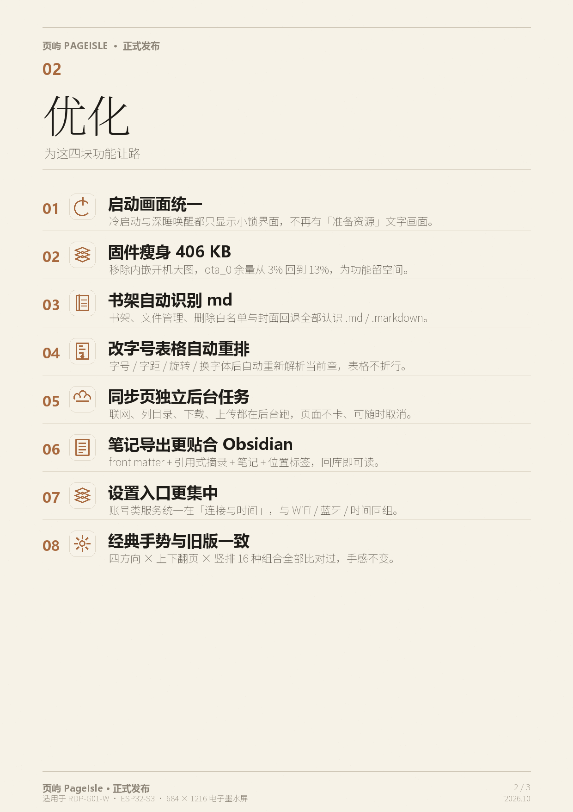

E-INK READER · RDP-G01-W · ESP32-S3
页屿 PageIsle
为 684×1216 电子墨水屏打磨的阅读系统：坚果云同步、Markdown 排版阅读、Obsidian 互通、可配置手势。用一根 USB 线，在浏览器里直接刷入。
- 坚果云同步
- Markdown 阅读
- Obsidian 互通
- 手势配置
- 自适应横竖屏
- 四档翻页
- 字级划线
- 八个特色功能
浏览器一键刷机（USB 有线）
用 电脑版 Chrome / Edge，数据线连接设备即可。无需安装驱动工具，不占用本地文件。
刷入后设备会自动重启。若没有自动重启，长按电源键一次即可。请先关闭占用该串口的程序（如 idf.py monitor、串口助手）。
- 电脑版 Chrome / Edge 89+（不支持 Firefox / Safari / 手机浏览器）
- 一根能传数据的 USB 线（只供电的线不行）
- 页面地址是 HTTPS 或 localhost（GitHub Pages 默认满足）
- 设备：RDP-G01-W · ESP32-S3 · 16 MB flash
刷机会写入引导程序、分区表与应用镜像（与官方分区布局一致），不会清空 TF 卡上的书、设置和阅读记录。
三步刷完
- 连接设备：用能传数据的 USB 线接到电脑，设备保持开机即可（不用按 BOOT）。
- 点按钮选串口：在弹出的串口列表里选设备对应的那一项（常见名字带
USB JTAG或USB Serial）。 - 等进度走完：写入约 3.6 MB；完成后设备重启，进入锁屏界面。之后可在「设置 → 升级和恢复 → 更新说明」里看到本版条目。
固件信息
| 系统名 | 页屿 PageIsle |
|---|---|
| 版本号 | 0.3.3-rc99 |
| 应用镜像 | 3,644,976 字节 |
| ota_0 余量 | 549,328 字节（13%） |
| sha256 | 9e978db8eb238565dd25c442c5ba0fca7b45efcfc59c7c8bbf51cd62b3d43ca3 |
功能介绍
在原版 kiikoread 0.3.3-rc99 的基础上，这一版补上了「云 → 设备 → 回传」的闭环，以及一套真正好用的 Markdown 阅读与手势配置。
坚果云同步 WebDAV
- 设置 →「连接与时间」→「坚果云同步」，填账号 + 应用密码 + 同步文件夹。
- 浏览云盘：可逐层进子目录，只列
.md / .txt / .epub，显示大小与修改时间。 - 点文件下载到书架新分类「云同步」：带进度、可取消、重名先确认覆盖；下完自动上书架。
- 应用密码只做混淆存放，不进入设置备份；无网络 / 认证失败 / 目录不存在 / 空间不足都有中文提示。
Markdown 阅读 离线排版
- 书架与文件管理直接打开
.md / .markdown，与 TXT / EPUB 共用面板、目录、书签、划线、统计与进度。 - 标题 H1–H6 分级字号、段落、列表、引用、围栏代码块、分隔线；粗体 / 斜体 / 高亮 / 行内代码 / 链接 / 图片占位。
- 标准管道表格：按正文宽、字号、字距计算列宽，单元格内自动折行，像素级列对齐。
- 章节标题自动生成目录；改字号 / 字距 / 旋转 / 换字体后自动重新解析当前章，表格不乱。
Obsidian 互通 双向
- 拉取：浏览 vault 目录，把
.md下载到设备阅读。 - 导出：把一本书的划线、笔记、标签生成 Obsidian 友好 Markdown（front matter + 引用摘录 + 位置 + 标签），PUT 回同步文件夹。
- 配合 Obsidian 端的 Send-to-E-ink 类插件，就是「笔记发到坚果云 → 设备下载阅读」的完整链路。
- 不涉及官方 Obsidian Sync 的私有加密协议。
手势配置 7 槽位 × 9 动作
- 阅读工具栏 →「按键控制」→「手势设置」；双击中间 / 长按正文 / 上滑 / 下滑 / 左滑 / 右滑 / 双指轻点 逐个绑定动作。
- 动作：上一页 / 下一页 / 工具栏 / 全屏 / 返回主页 / 手动全刷 / 打开目录 / 划线 / 不操作。
- 四套推荐：经典 / 上下翻页 / 单手 / 极简，可一键套用；也能全自定义，逐槽位保存。
- 「经典」与旧版行为逐格一致；长按的「划线 / 目录」开关在「划线」页右上角。



这一版原有的能力
自适应阅读方向、四档翻页效果、字级划线、划线笔记与标签、繁简两态与自定义字体、反色三态、极简时钟锁屏、五栏导航、八个特色功能、书架搜索与封面加速、阅读统计与章节跳转等，全部保留。
- 自适应横竖屏
- 普通/水波纹 · 快刷/高清
- 字级划线
- 划线笔记 + 标签
- 繁简两态
- 自定义系统字体
- 反色三态
- 极简时钟锁屏
- 五栏底栏
- 八个特色功能
- 书架搜索
- 阅读统计
- 章节内跳转
- USB 读卡
- WiFi 传书
- OTA 升级
下载
不想用浏览器刷机？直接下载镜像，用 TF 卡本地升级（设置 → 升级和恢复 → 系统升级）。
命令行刷写（可选）
装好 Python 与 esptool 后，也可以下载 firmware/ 里的四个 bin 手动刷：
python -m esptool --chip esp32s3 --port COM3 --baud 460800 \
write-flash 0x0 bootloader.bin 0x8000 partitions.bin \
0x10000 firmware.bin 0xd10000 ota_data_initial.bin不要加 --erase-all：会清空设置与阅读记录。分区表与引导程序与官方一致，升级不必整片擦除。
常见问题
点按钮没有反应 / 提示不支持
Web Serial 只在电脑版 Chrome、Edge（89+）以及 localhost / HTTPS 页面可用；Firefox、Safari、微信内置浏览器、手机浏览器都不支持。请把页面放在 https 地址（例如 GitHub Pages）或本机 python -m http.server 的 localhost 上打开。
串口列表里找不到设备
先在系统设备管理器里确认能看到 USB JTAG/serial debug unit（或 COM 口）；换一根能传数据的 USB 线；确认设备已开机。Windows 上个别机器需要允许浏览器访问串口设备。
刷机会不会清空我的书和设置？
不会。刷写只覆盖引导程序、分区表、应用镜像和 OTA 元数据；书架文件在 TF 卡上，设置与阅读记录在 NVS 数据分区，都不会被清掉。除非你额外勾选了「擦除整片 Flash」。
提示串口被占用 / 打不开端口
先关掉可能占用同一个串口的程序：idf.py monitor、串口助手、Arduino IDE 串口监视器、厂商刷机工具等，等几秒再点刷机。同一个浏览器标签页里重复刷机时，先让上一次连接断开（拔插一次数据线也可以）。
Windows 上需要装驱动吗？
设备是 ESP32-S3 的 USB-Serial-JTAG，Windows 10/11 会自动装好 usbser，一般不需要额外驱动。如果设备管理器里是黄色感叹号，重新插拔一次或换一个 USB 口（不要用只供电的集线器）。
怎么确认刷进去了、是这一版？
刷完开机后：设置 → 升级和恢复 → 更新说明，顶部新增了「坚果云同步 / Markdown / 手势」等条目；设置 → 连接与时间里能看到「坚果云同步」这一行。也可以对照本页的 sha256 与 TF 卡镜像校验值。
刷到一半失败 / 断线了怎么办
设备此时停在引导模式，重新连接再刷一次即可；重复刷同一份固件没有副作用。若设备反复重启，用 TF 卡升级方式兜底。
怎么回退到上一版？
和刷机一样：把上一版的 .bin 放 TF 卡根目录用本地升级，或用本页的刷机按钮刷入上一版镜像。分区布局没有变，回退不需要改引导程序。
Markdown 里的图片为什么不显示？
这一版 Markdown 只排版文字与结构，图片引用会显示成 [图] alt 占位；Obsidian 插件附带的 attachments/ 目录也不会被下载。图文混排仍在 EPUB 阅读里完整支持。
关于这个页面
本页是纯静态站点，可以整份放进 GitHub Pages：刷机能力来自开源的 esp-web-tools（Apache-2.0，本仓库内已内置，不依赖任何 CDN）。页面本身不收集任何数据，串口通信只在你的浏览器与设备之间发生。
固件基于上游 kiikoread 0.3.3-rc99 做应用层定制，分区表、引导程序、OTA 元数据布局与官方一致，未改动。固件按 Apache-2.0 发布；图标来自 Lucide（ISC）。刷机有风险，请自行确认版本与设备型号（RDP-G01-W / ESP32-S3 / 16 MB flash）。